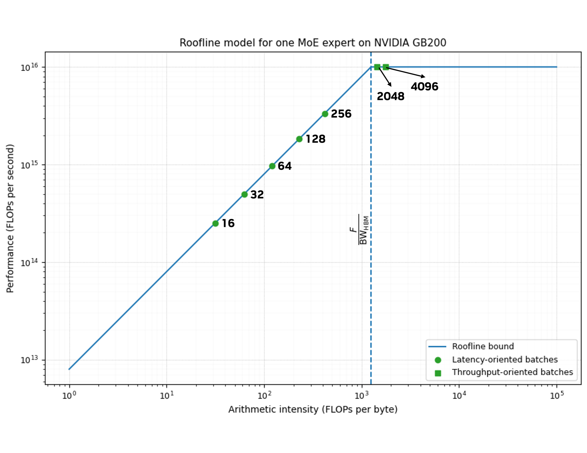
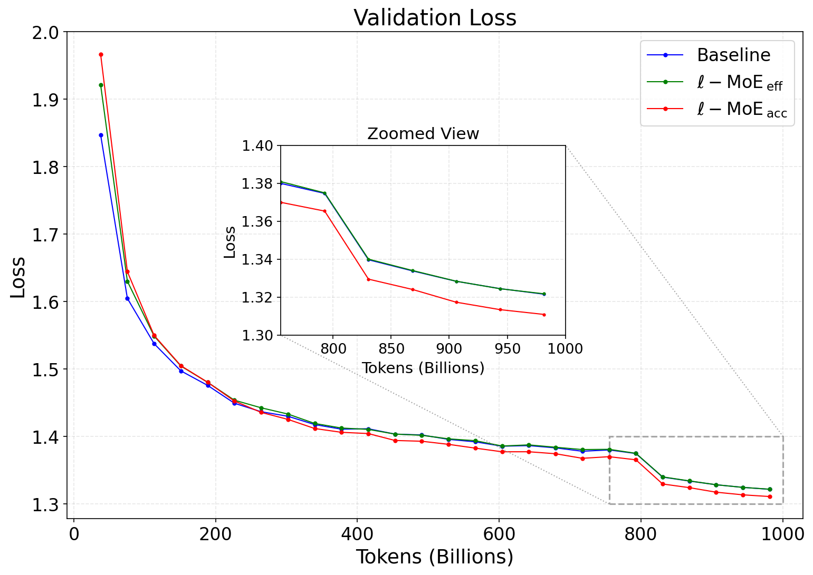
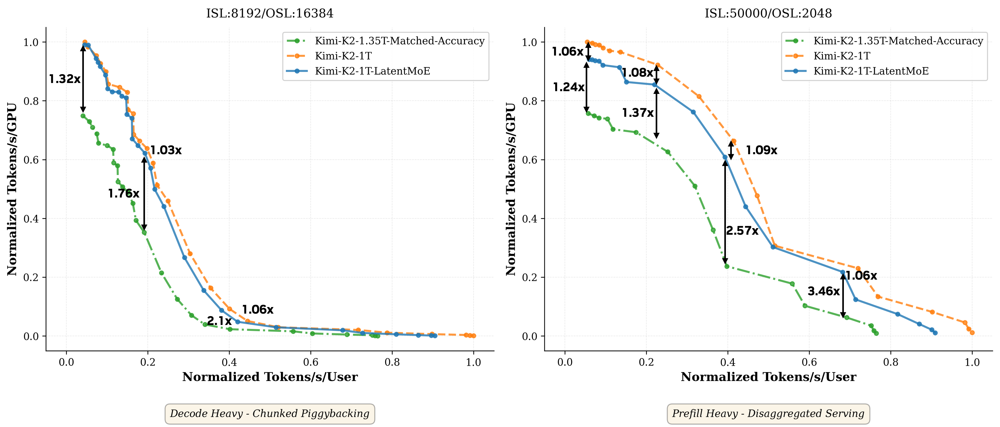
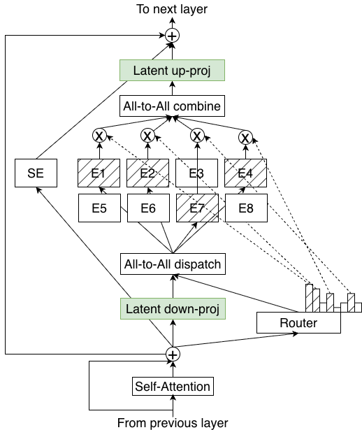
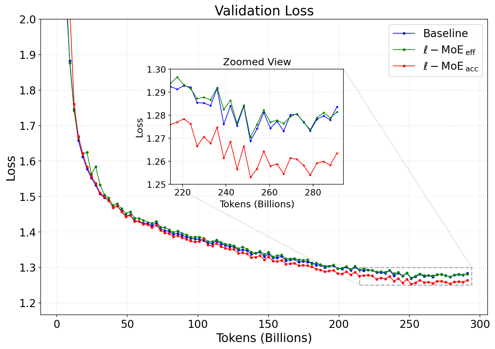

混合专家（MoE）已是顶级大模型的标配，但它离「推理成本最优「究竟还有多远，业界一直没说清。
NVIDIA这篇技术报告从软硬件协同设计出发，给出了一个系统性的答案：LatentMoE。
MoE能在每token浮点运算数不变的前提下扩大参数量，但它真正的成本有两个互补维度：每FLOP精度（算得快不快）与每参数精度（占内存多不多）。两者分别对应不同瓶颈：低时延场景受显存带宽限制，吞吐场景受全互联通信限制。
作者以Qwen3-235B-A22B在GB200上为案例建模：当算术强度低于1250 FLOPs/字节时，专家计算落在roofline的显存受限区，性能卡在权重加载而非算力；而在吞吐场景，通信时间与计算时间之比高达约9，全互联通信成为绝对主导。
关键结论：现有MoE主要面向离线吞吐优化，忽视了在线部署的时延、带宽、通信约束，导致「总算力看着高效、实际部署却很低效」。



为搞清楚该压什么、保什么，作者推导出五条原则，全部围绕一个核心约束：有效非线性预算K·m不能动（它决定模型表达能力）。
原则I：低时延场景推理成本由权重加载的显存带宽主导，所以每参数精度最关键。原则II：吞吐场景要最小化全互联通信量，它正比于 (N/EP)·t_exp·d，降路由维度d或激活数K才有效（中间维度m不影响token大小，改它没用）。
原则III：保质量必须保住K·m，所以不能降K或m。原则IV：隐藏维度d不能无限压，存在任务相关下界r_eff（特征秩），压到其下质量会崩塌。原则V：同时放大专家数N与top-k K，组合空间C(αN, αK) 指数级扩张，质量随之提升。
把原则I~V串起来：通信与显存都随K、d线性缩放，但K、m不能降，于是唯一可压的维度是d。只要把d缩小 α 倍、同时把K放大 α 倍（保证d/α ≥ r_eff），就能在成本不变的前提下提升表达力与组合稀疏性，这正是LatentMoE的出发点。
LatentMoE的做法很直接：每个输入token x（维度d）先经可学习下投影W_↓ 压到潜空间 ℓ，在潜空间里做专家路由与计算，最后用上投影W_↑ 投回原维度d。只有输入维度d→ℓ 被压缩，专家内部宽度m不变，所以有效非线性预算K·m原样保留。
路由专家完全在潜空间工作（权重形状m×ℓ、ℓ×m），共享专家仍在原维度d。由于token分发与聚合都在潜空间R^ℓ 进行，通信量相对标准MoE缩减 α 倍，权重加载的显存带宽成本也缩减 α 倍。
两种配置：ℓ-MoE-eff = 保持专家数N、top-k K不变，纯粹降开销、保基线精度；ℓ-MoE-acc（推荐）= 把N、K同时放大 α 倍，通信与显存带宽相对标准MoE不变，但专家多样性更高，等成本下精度更优，把帕累托前沿推到新高度。
在16B总参/2B激活模型上做消融。先扫压缩比：α ≤ 4时质量无损，后续统一取 α=4。再验证「专家放大」的必要性：只压d不放大专家数，验证损失明显劣化；加上N'=αN后曲线追平，证明无需大量重调超参。
在16B上对比两种变体：ℓ-MoE-eff收敛匹配基线，ℓ-MoE-acc验证损失明显更低，作者推荐后者作为精度–成本帕累托最优。
扩到95B总参/8B激活（α=4，ℓ=1024）：趋势一致。300B token时下游精度如下表：ℓ-MoE-acc在MMLU Pro、MMLU、代码、数学、常识全维度超越基线，且总参仅多0.4B；ℓ-MoE-eff激活参数降到5.62B，精度仍与基线相当或更好。
混合Mamba-Attention MoE（73B总参/8B激活）在1T token上同样成立：ℓ-MoE-acc各任务全面领先基线（MMLU Pro 48.30→52.87，数学78.32→80.19）。
推理性能上，Hybrid-73B模型在两块H100、vLLM FP8下实测：高并发时每GPU吞吐仅比标准MoE低至多6%；作者指出可用独立CUDA流、专用小矩阵GEMM算子进一步弥合。
万亿参数投影：以Kimi-K2-1T为基准，LatentMoE变体的有效参数乘数 λ≈1.35×。要达同等精度，标准MoE需扩到约1.35T（多约350B参数），在投影帕累托前沿上慢1.24×–3.46×；而潜投影自身开销很小（与原生差距在9% 以内）。
本文首次挑战原始MoE设计范式，在等参数、等FLOP下都给出更高精度。量化、稀疏、专家剪枝/合并等方法与LatentMoE 正交，可叠加使用。




最相近的是MoLAE（后训练低秩压缩）：它只压部分专家（FC2）、用分组潜投影补精度，反而放弃了token分发时的通信节省、限制了带宽降低。作者强调：高效MoE服务并非FLOP受限，只降FLOP救不了帕累托前沿。同期mHC（改残差连接）与LatentMoE互补，可叠加。
参考：https://arxiv.org/src/2601.18089